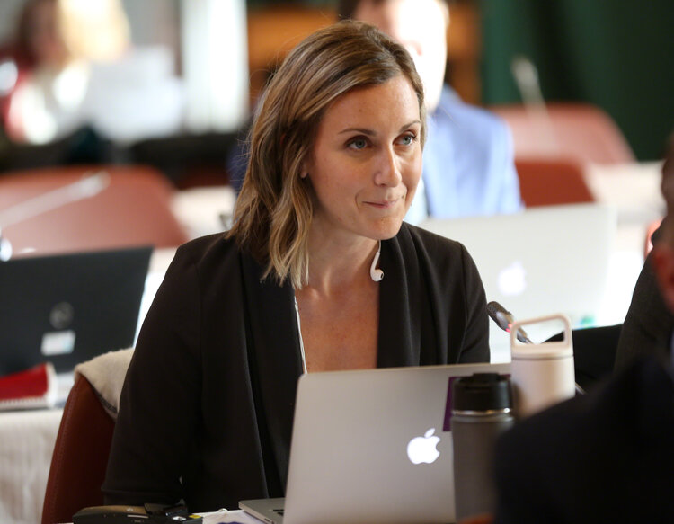
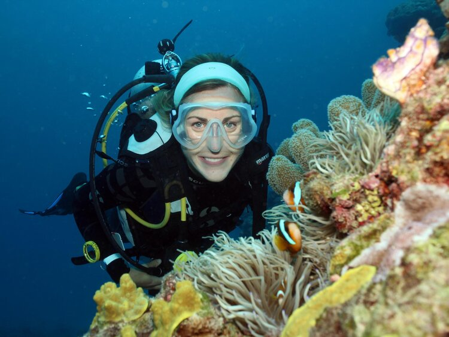
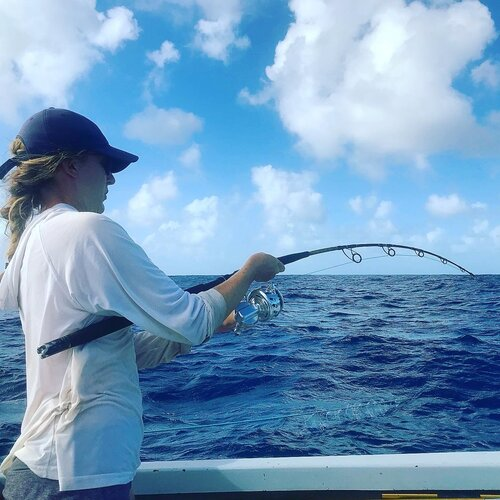
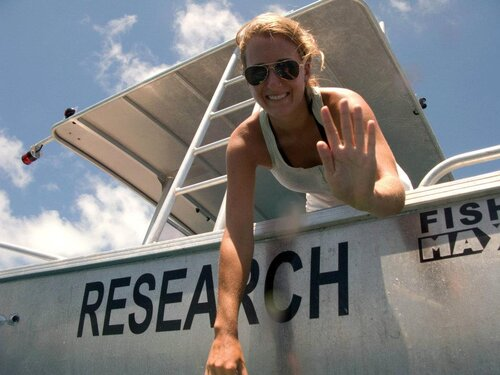
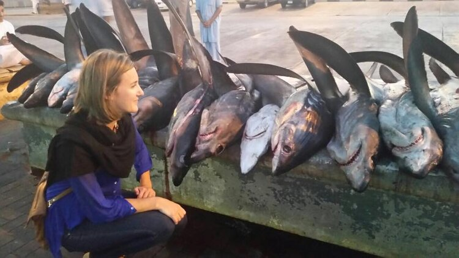
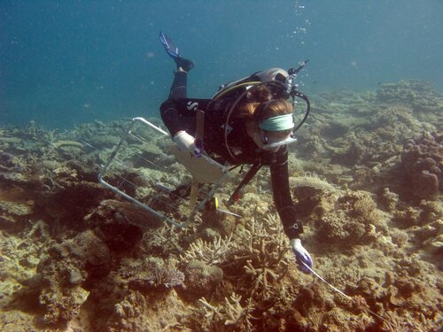

Julia is a boundary-spanning scientist working at the nexus of fisheries science and environmental policy.



Closing the gap between high-level decisions and on-the-ground implementation is what drives Julia’s research. Grounded in her background in ecology and fisheries science, Julia employs novel interdisciplinary approaches while tackling some of the most challenging and complex problems in environmental science.